Setiap peta punya cerita, karakter, dan taktik tersendiri
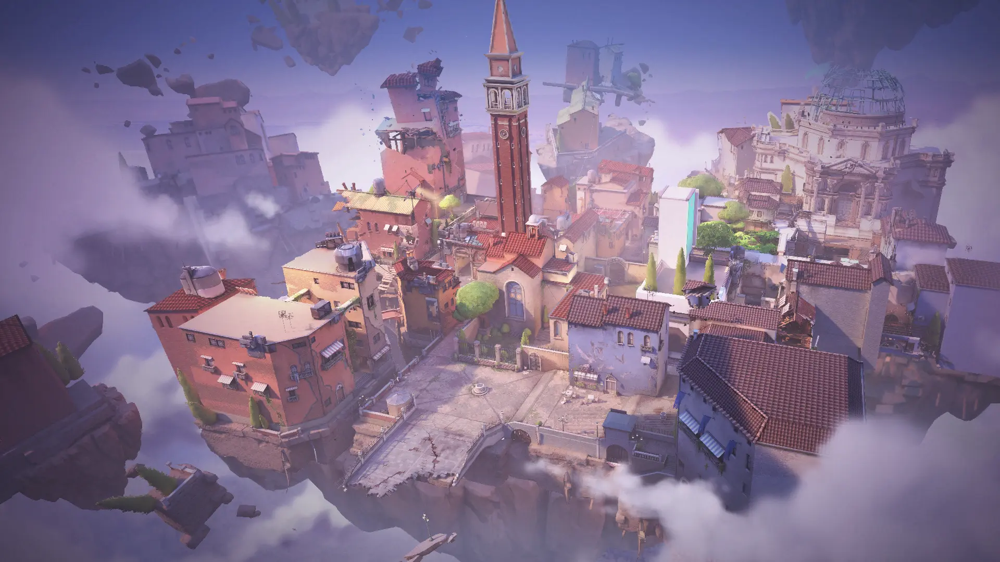
Peta paling ikonik di Valorant. Berlatar di Venice, Italia, Ascent menampilkan mid terbuka yang menjadi rebutan setiap ronde. Gerbang mekanik di kedua site memungkinkan tim menutup atau membuka akses sewaktu-waktu — menambah dimensi strategi yang unik dan tak ditemukan di peta lain.
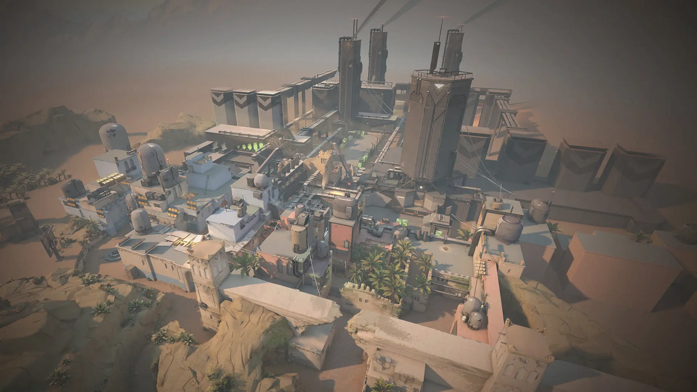
Berlatar di Rabat, Maroko, Bind menggantikan mid dengan dua teleporter searah yang menghubungkan kedua sisi peta. Rotasi jadi sangat cepat dan musuh bisa muncul dari arah tak terduga — peta favorit pemain agresif yang suka menciptakan chaos.
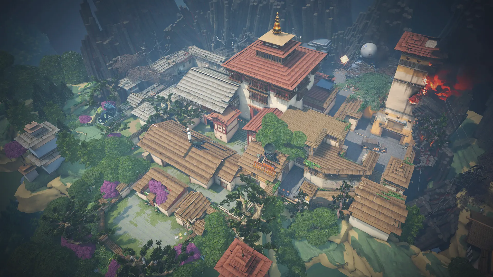
Satu-satunya peta dengan tiga site (A, B, C) di Valorant. Berlatar di sebuah biara kuno di Bhutan, Haven memaksa tim pembela menyebar lebih luas, menciptakan tekanan konstan bagi penyerang yang harus memilih target dari tiga opsi sekaligus.
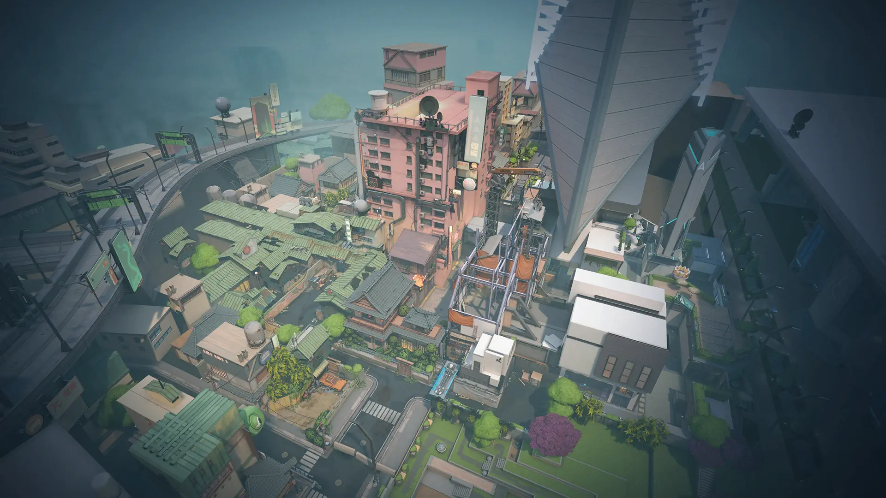
Berlatar di Tokyo, Jepang, Split dikenal dengan lorong-lorong sempit dan banyak titik ketinggian yang krusial. Kontrol mid dan rope menjadi kunci pemenangan ronde. Peta ini sangat cocok untuk Sentinel dan Controller yang menguasai area secara sistematis dan disiplin.
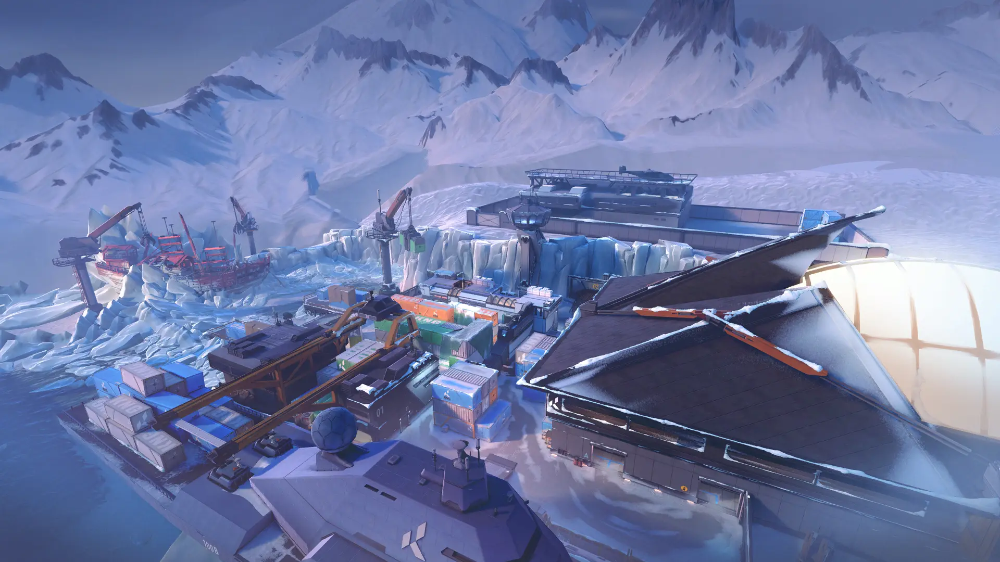
Fasilitas penelitian terbekukan di Pulau Bennett, Rusia. Icebox penuh dengan zipline vertikal, kontainer bertumpuk, dan sudut tersembunyi. Peta paling kompleks secara vertikal — Duelist dengan mobilitas tinggi seperti Jett sangat bersinar di sini.
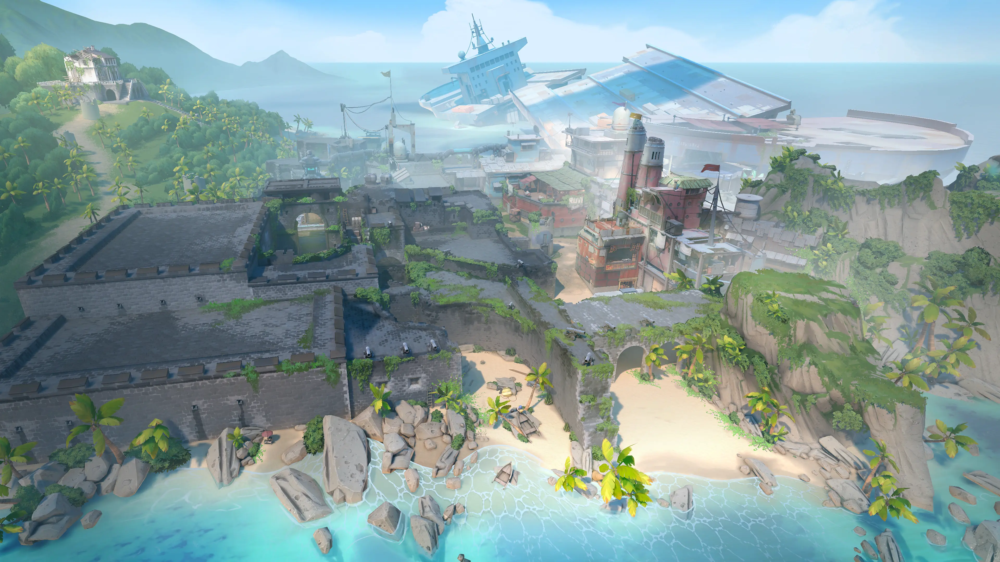
Berlatar di pulau tropis terpencil dekat Segitiga Bermuda, Breeze adalah peta terluas di Valorant. Jarak tembak jauh dan ruang terbuka luas membuat Operator mendominasi. Peta impian para sniper dan pemain jarak jauh.
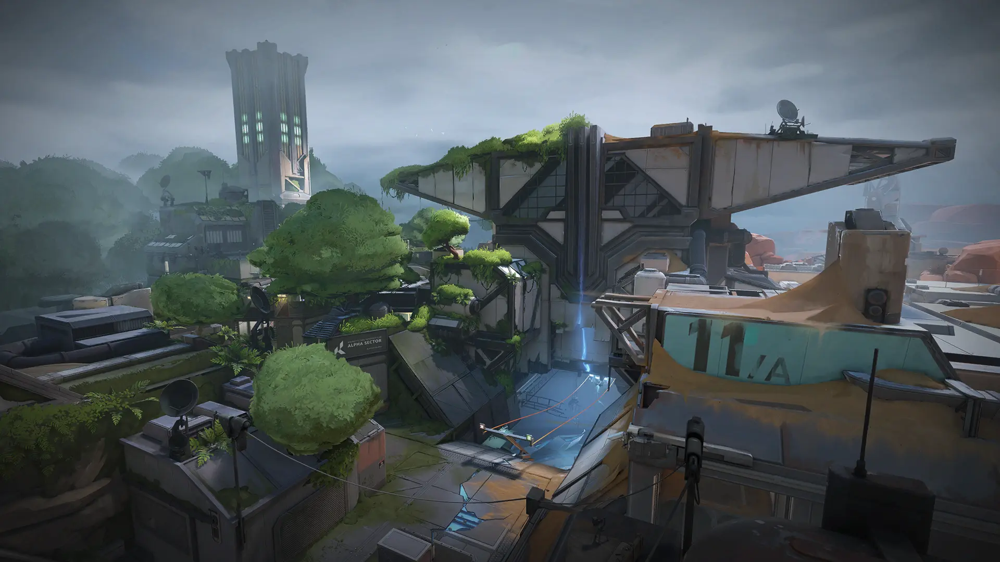
Fasilitas penelitian rahasia di Santa Fe, New Mexico yang hancur akibat eksperimen radianite. Peta berbentuk huruf H yang unik — penyerang bisa menyerang dari dua arah sekaligus menggunakan zipline, memaksa tim pembela berputar cepat dan berkomunikasi lebih intens dari biasanya.
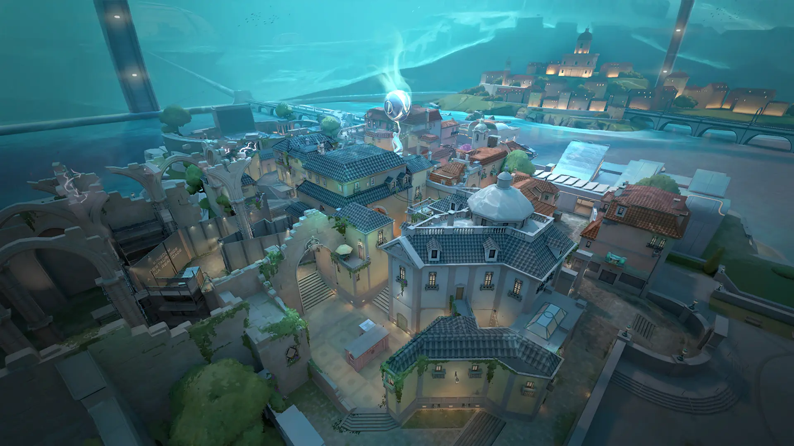
Kota bawah laut di bawah Lisbon, Portugal. Pearl adalah satu-satunya peta tanpa elemen mekanik apapun — murni mengandalkan skill tembak dan strategi tim. Lorong sempit dan mid yang panjang menciptakan pertarungan taktis yang sengit dan tanpa kompromi.
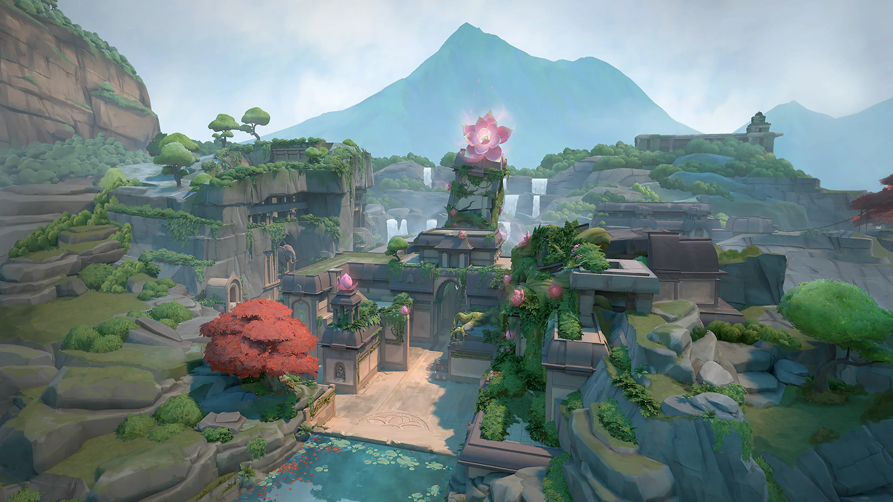
Reruntuhan candi kuno di Ghats Barat, India, dengan tiga site. Lotus menghadirkan pintu batu berputar dan dinding yang bisa dihancurkan — membuka rute alternatif yang mengundang permainan kreatif dan strategi yang di luar dugaan musuh.
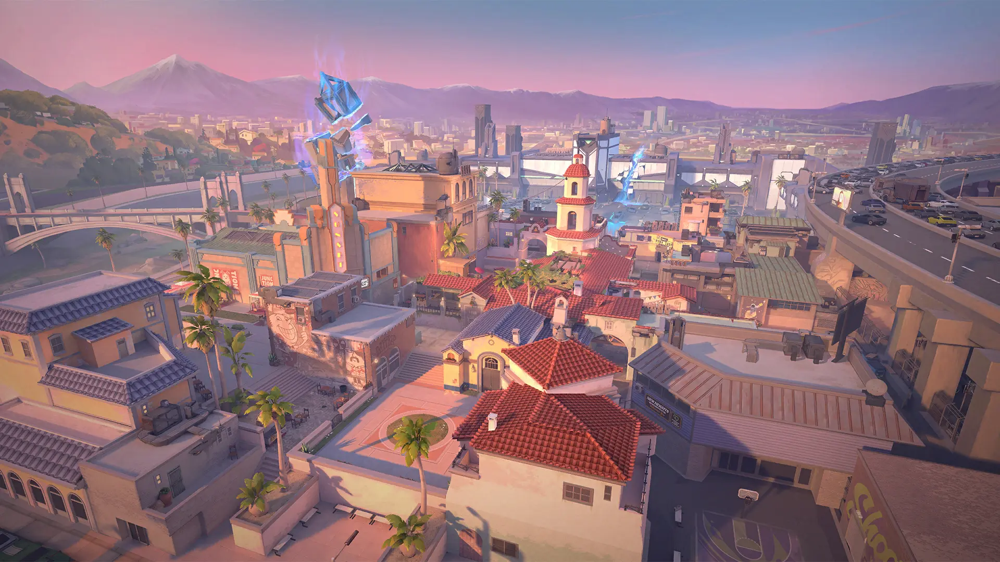
Jalanan Los Angeles saat senja keemasan. Sunset hadir dengan layout tiga jalur yang bersih dan desain simetris yang memberikan keseimbangan sempurna antara serangan dan pertahanan. Pilihan tepat bagi pemain baru maupun veteran yang mengutamakan strategi tim terstruktur.
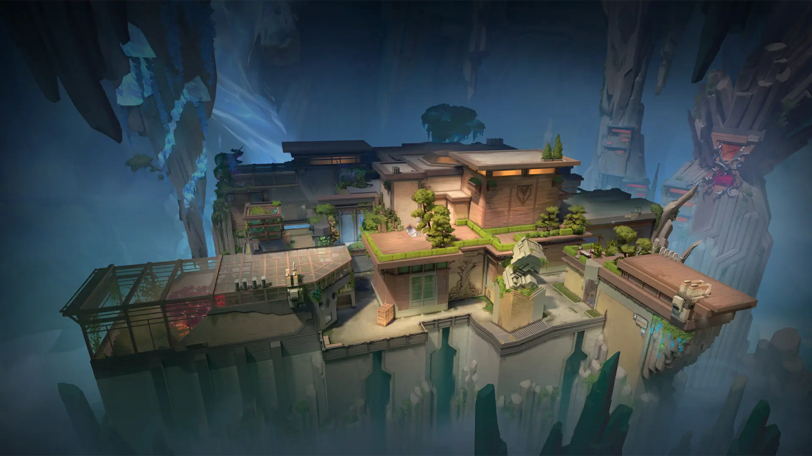
Basis rahasia di bawah Pulau Sør-Jan, Norwegia — satu-satunya peta tanpa dinding luar. Kamu bisa jatuh ke jurang tak bertepi jika salah melangkah. Death drop membuka kemungkinan utility play yang tidak ada di peta mana pun di Valorant.
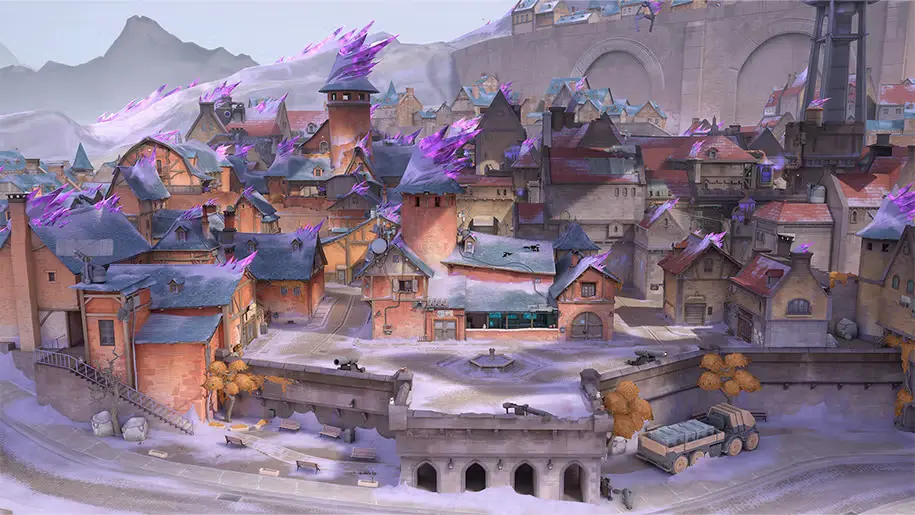
Peta terbaru Valorant, berlatar di Mont-Saint-Michel, Prancis di bumi Omega — sebuah kota kastil abad pertengahan yang kini menjadi fasilitas penambangan garam radianite. Lorong industri berlapis dan mesin-mesin besar menciptakan medan yang kompleks dan penuh taktik.